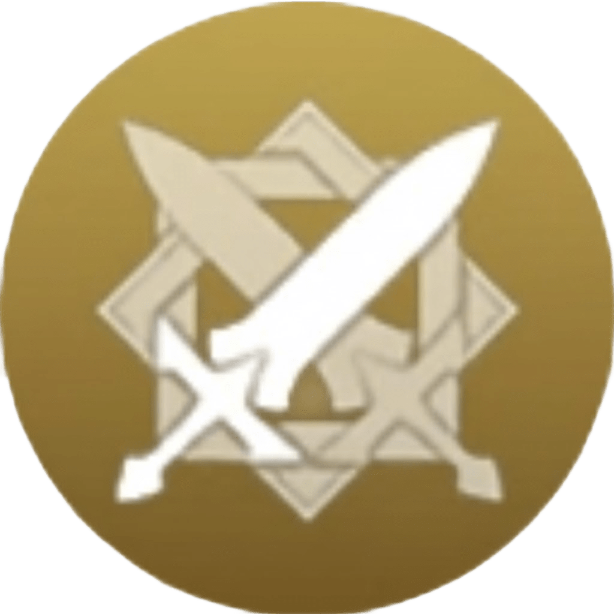
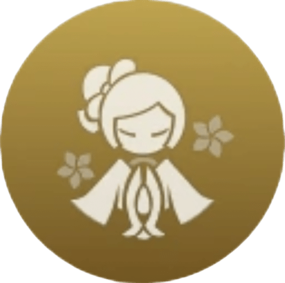
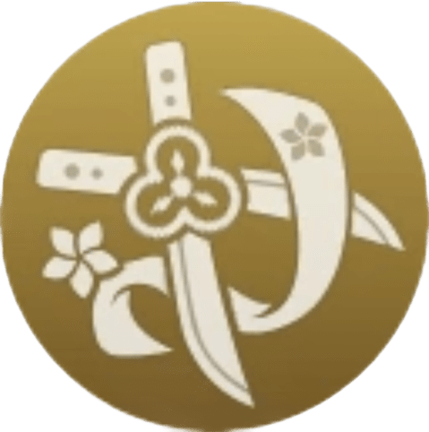
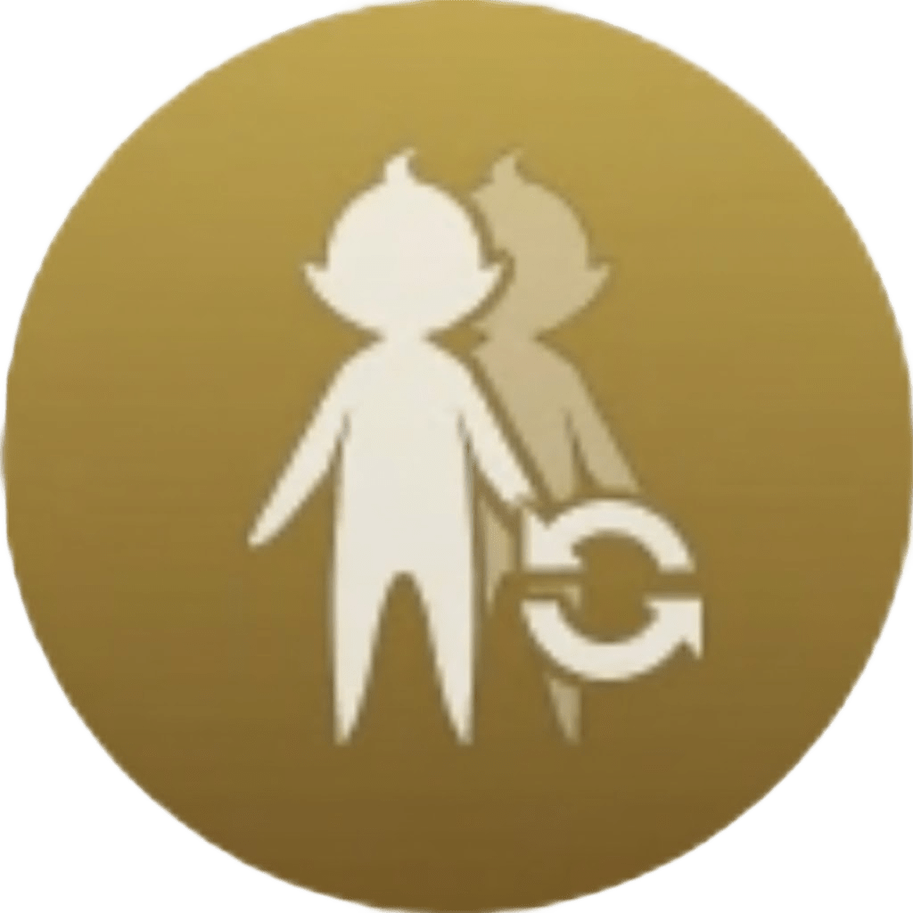
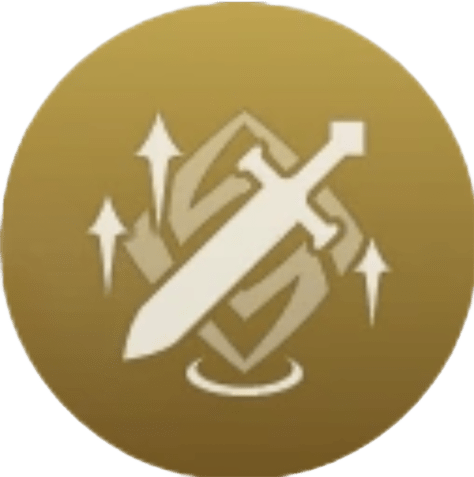
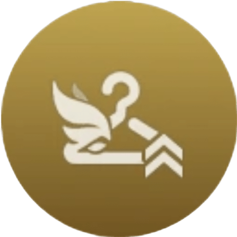

Talentos
-

Ataque Normal: Técnica tejecorazones
Ataque Normal:
Realiza hasta 4 ataques consecutivos con espada.
Ataque Cargado:
Consume cierta cantidad de Aguante para desatar un doble golpe de espada.
Ataque Descendente:
Se lanza desde el aire para golpear el suelo, dañando a los enemigos cercanos e infligiendo Daño en el AdE en el momento del impacto.
-

Caricia de mangas
Arremete a gran velocidad hacia delante con un movimiento grácil como la seda y, tras ello, invoca a su lado a la robomuñeca Tamoto y ejecuta un ataque ascendente que inflige Daño Geo en el AdE a los enemigos cercanos en función del ATQ y la DEF de Chiori.
Esta habilidad se libera de manera distinta al mantener pulsado.
Mantener pulsado:
Apunta para ajustar la dirección en la que arremete.
Tamoto:
• Ejecuta un tajo cada cierto tiempo contra los enemigos cercanos que inflige Daño Geo en el AdE en función del ATQ y la DEF de Chiori.
• Si mientras Tamoto está activa se genera una creación Geo o ya hay alguna en las cercanías, invoca otra Tamoto al lado de tu personaje en uso. Como máximo, solo se puede crear una Tamoto adicional de esta forma, y su duración se calculará de manera independiente.
"Bordados lilas,
mangas ornamentadas,
aves borrachas."
-

Filos gemelos: Desenvaine alígero
Desenvaina dos espadas para ejecutar un feroz tajo de maestra costurera que inflige Daño Geo en el AdE en función del ATQ y la DEF de Chiori.
“Sigue tus ideales y las leyes del mundo se volverán más claras”.
-

Hecho a medida
Durante un breve periodo de tiempo tras ejecutar el ataque ascendente de Caricia de mangas, se producen distintos efectos dependiendo de lo que se haga después de realizar dicho ataque: si pulsas una vez la Habilidad Elemental, se activa el efecto de “bordado”; si haces clic para ejecutar un Ataque Normal, se activa el efecto de “costura”.
Bordado:
• Cambia a tu siguiente personaje.
• Aplica a todos tus personajes del equipo el efecto de “agudeza”, de manera que cuando tu personaje en uso golpea a un enemigo cercano con un Ataque Normal, Cargado o Descendente, Tamoto ejecutará en la ubicación de dicho enemigo un ataque coordinado que inflige Daño Geo en el AdE en una cantidad equivalente al 100% del daño del ataque ascendente de “Caricia de mangas”. El daño infligido de esta manera se considera daño de Habilidad Elemental.
• El efecto de agudeza dura 8 segundos y Tamoto solo puede ejecutar un ataque coordinado cada 2 segundos. Mientras agudeza esté activa, como máximo se podrán ejecutar 2 ataques coordinados.
Costura:
Chiori se imbuye del elemento Geo durante 5 segundos.
Si Chiori está en uso y no vuelves a pulsar una vez la Habilidad Elemental o a ejecutar un Ataque Normal durante el breve periodo de tiempo tras efectuar el ataque ascendente de “Caricia de mangas”, se activará directamente el efecto de “costura”. -

Retoque final
Cuando un personaje cercano del equipo genera una creación Geo, Chiori obtiene un 20% de Bono de Daño Geo durante 20 segundos.
-

Hermosa figura
Si cualquier personaje del equipo lleva equipado un vestuario distinto al vestuario por defecto o un planeador distinto a las Alas del principiante, tus personajes del equipo obtienen el efecto de “paso ligero”, de manera que su Vel. Movimiento aumenta en un 10%.
Este efecto no se activará en dominios, Dominios de la cruzada y la Espiral del Abismo, y no se puede acumular con otros efectos de paso ligero.